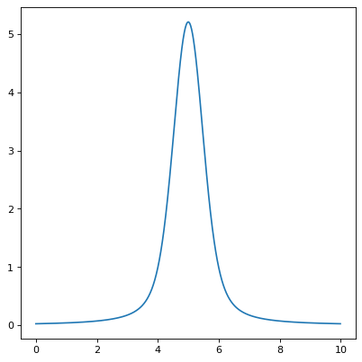

Voigt1D¶
-
class
astropy.modeling.functional_models.Voigt1D(x_0=0, amplitude_L=1, fwhm_L=0.6366197723675814, fwhm_G=0.6931471805599453, method='humlicek2', **kwargs)[source]¶ Bases:
astropy.modeling.Fittable1DModelOne dimensional model for the Voigt profile.
- Parameters
- x_0
floatorQuantity Position of the peak
- amplitude_L
floatorQuantity. The Lorentzian amplitude (peak of the associated Lorentz function) - for a normalized profile (integrating to 1), set amplitude_L = 2 / (np.pi * fwhm_L)
- fwhm_L
floatorQuantity The Lorentzian full width at half maximum
- fwhm_G
floatorQuantity. The Gaussian full width at half maximum
- method
str, optional Algorithm for computing the complex error function; one of ‘Humlicek2’ (default, fast and generally more accurate than
rtol=3.e-5) or ‘Scipy’, alternatively ‘wofz’ (requiresscipy, almost as fast and reference in accuracy).
- x_0
- Other Parameters
- fixed
adict, optional A dictionary
{parameter_name: boolean}of parameters to not be varied during fitting. True means the parameter is held fixed. Alternatively thefixedproperty of a parameter may be used.- tied
dict, optional A dictionary
{parameter_name: callable}of parameters which are linked to some other parameter. The dictionary values are callables providing the linking relationship. Alternatively thetiedproperty of a parameter may be used.- bounds
dict, optional A dictionary
{parameter_name: value}of lower and upper bounds of parameters. Keys are parameter names. Values are a list or a tuple of length 2 giving the desired range for the parameter. Alternatively, theminandmaxproperties of a parameter may be used.- eqcons
list, optional A list of functions of length
nsuch thateqcons[j](x0,*args) == 0.0in a successfully optimized problem.- ineqcons
list, optional A list of functions of length
nsuch thatieqcons[j](x0,*args) >= 0.0is a successfully optimized problem.
- fixed
See also
Notes
Either all or none of input
x, positionx_0and thefwhm_*must be provided consistently with compatible units or as unitless numbers. Voigt function is calculated as real part of the complex error function computed from either Humlicek’s rational approximations (JQSRT 21:309, 1979; 27:437, 1982) following Schreier 2018 (MNRAS 479, 3068; andhum2zpf16mfrom his cpfX.py module); orwofz(implementing ‘Faddeeva.cc’).Examples
import numpy as np from astropy.modeling.models import Voigt1D import matplotlib.pyplot as plt plt.figure() x = np.arange(0, 10, 0.01) v1 = Voigt1D(x_0=5, amplitude_L=10, fwhm_L=0.5, fwhm_G=0.9) plt.plot(x, v1(x)) plt.show()
Attributes Summary
This property is used to indicate what units or sets of units the evaluate method expects, and returns a dictionary mapping inputs to units (or
Noneif any units are accepted).Names of the parameters that describe models of this type.
Methods Summary
evaluate(x, x_0, amplitude_L, fwhm_L, fwhm_G)One dimensional Voigt function scaled to Lorentz peak amplitude.
fit_deriv(x, x_0, amplitude_L, fwhm_L, fwhm_G)Derivative of the one dimensional Voigt function with respect to parameters.
Attributes Documentation
-
amplitude_L= Parameter('amplitude_L', value=1.0)¶
-
fwhm_G= Parameter('fwhm_G', value=0.6931471805599453)¶
-
fwhm_L= Parameter('fwhm_L', value=0.6366197723675814)¶
-
input_units¶
-
param_names= ('x_0', 'amplitude_L', 'fwhm_L', 'fwhm_G')¶ Names of the parameters that describe models of this type.
The parameters in this tuple are in the same order they should be passed in when initializing a model of a specific type. Some types of models, such as polynomial models, have a different number of parameters depending on some other property of the model, such as the degree.
When defining a custom model class the value of this attribute is automatically set by the
Parameterattributes defined in the class body.
-
sqrt_ln2= 0.8325546111576977¶
-
sqrt_ln2pi= 1.475664626635606¶
-
sqrt_pi= 1.7724538509055159¶
-
x_0= Parameter('x_0', value=0.0)¶
Methods Documentation
{kind=link}
{kind=link}